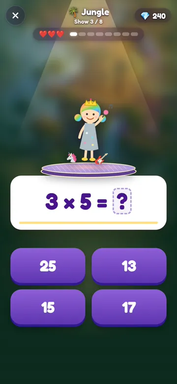
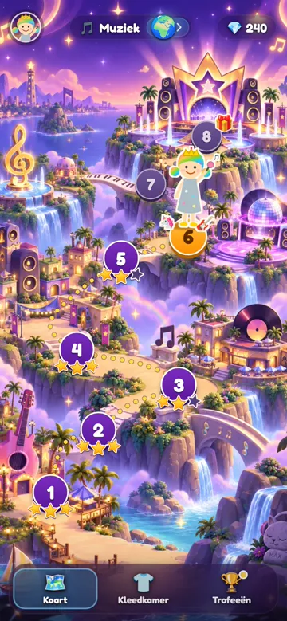
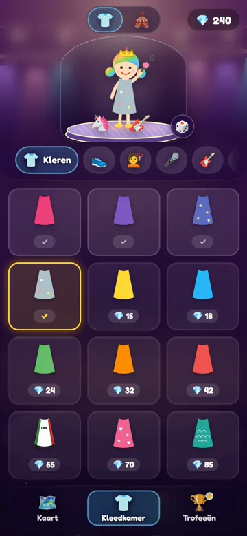
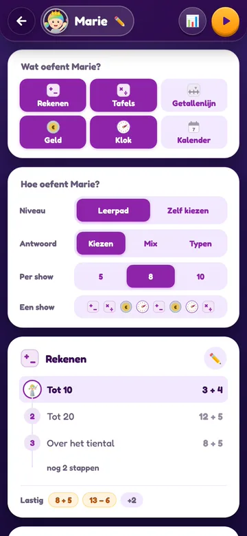
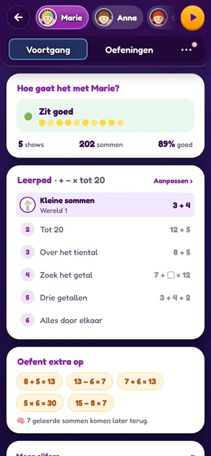

Rekenen en tellen als een show, voor kinderen van 5 tot 8.
▶ Speel meteenVoor je kind

Optreden met sommen
Werelden ontdekken
De ster aankleden
Voor jou

Jij kiest wat
Je ziet hoe het groeit
- Rekenen
- Tafels
- Getallenlijn
- Geld
- Klok
- Kalender
- Eerst leren tellen
- Lastige sommen komen terug
- Leest voor
Tik in het spel op ⚙️ Ouders.
Als app op je tablet
- Eigen icoon
- Heel scherm
- Zonder internet
Tik in het spel op ⊞ Als app.
Je krijgt de stappen voor jouw toestel.
Je sterren
- Geen account
- Geen reclame
- Mee naar een ander toestel
Nieuw toestel? ⚙️ Ouders › Back-up › Overzetten
Op het oude toestel krijg je een code, die tik je op het nieuwe in.